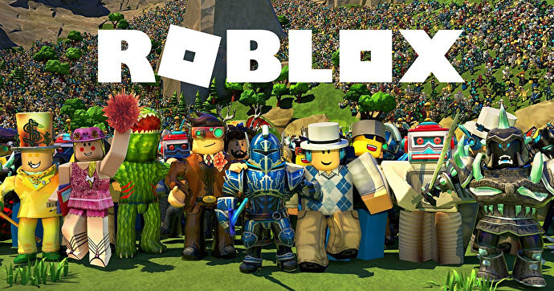

The best games within the game
Roblox has been around for more than 15 years, and in that time, hundreds of awesome games have been created.
With a playerbase that's going as strong as ever thanks to continued growth and huge collabs in 2021, there's no end
in sight for this free-to-play ngame creating platform. Now is an excellent time to sample some of the best
user-created games Roblox has to offer.
With literally millions of games to choose from, just deciding where to start with Roblox
can be a daunting prospect. Here's our rundown of ten of the best and most popular
games to play on Roblox right now.
Whether you're in the mood for collecting pets in an RPG like Adopt me, battling your
friends in Anime Fighting Simulator, or jumping out of your skin with horror game
Murder Mystery 2, these are the best Roblox games for you!
What's more, you can get tons of free items in these games with Roblox promo codes.
We have full lists of bonuses for a lot of these games, so we will link to them as well.